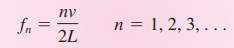
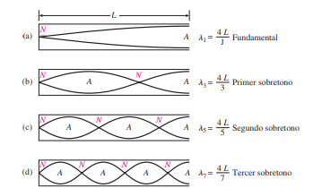

Física para Ingeniería
La acústica es la ciencia que estudia los diversos aspectos relativos al sonido, particularmente los fenómenos de generación, propagación y recepción de las ondas sonoras en diversos medios, así como su transducción, su percepción y sus variadas aplicaciones tecnológicas. La acústica tiene un carácter fuertemente multidisciplinario, abarcando cuestiones que van desde la física pura hasta la biología y las ciencias sociales
En nuestro medio, la acústica es uno de los campos menos valorados de la física y de la ciencia en general. La acústica es la ciencia que estudia los diversos aspectos relativos al sonido, particularmente los fenómenos de generación, propagación y recepción de las ondas sonoras en diversos medios, así como su transducción, su percepción y sus variadas aplicaciones tecnológicas. La acústica tiene un carácter fuertemente multidisciplinario, abarcando cuestiones que van desde la física pura hasta la biología y las ciencias sociales.
La acústica, que comenzó con los experimentos de Pitágoras en la antigua Grecia, ha evolucionado a lo largo de los siglos para convertirse en una ciencia integral que se aplica en campos como la música, la arquitectura, la ingeniería de sonido y la medicina. Desde los patrones de vibración sonora de Ernst Chladni en el siglo XVIII hasta las técnicas avanzadas de hoy en la actualidad.
Jaramillo, A. M. J. (2007). Acústica: la ciencia del sonido. Itm.
1.1 sonido es una alteración de la presión atmosférica que se produce por las oscilaciones de partículas a través de estas partículas se transmite longitudinalmente la onda sonora.
1.2 Ruido auditivamente estamos acostumbrados a llamar ruido a sonidos que no son agradables pero la definición más acertada de acústica es un sonido no deseado.
1.3 Longitud de onda: es la longitud de un ciclo complejo de la onda.
1.4 Periodo: es la duración en segundos de un ciclo completo de la onda.
1.5 Frecuencia: es el numero de ciclos u oscilaciones que se repiten en un segundo.
Jaramillo, A. M. J. (2007). Acústica: la ciencia del sonido. Itm.
El concepto de sonido se interpreta de dos maneras. Los fisiólogos lo describen como las sensaciones auditivas causadas por perturbaciones longitudinales en el aire. Según ellos, el sonido no existe en un planeta lejano. Sin embargo, los físicos se refieren a las propias perturbaciones.
El sonido es una onda mecánica longitudinal que se difunde a través de un medio elástico.
Para que se genere el sonido, se requieren dos elementos: una fuente de vibración mecánica y un medio elástico para propagar la perturbación. La fuente puede ser un diapasón, una cuerda vibrante o una columna de aire vibrando en un tubo de órgano. Los sonidos son producidos por materia en vibración. La necesidad de un medio elástico se puede demostrar colocando un timbre eléctrico dentro de un frasco conectado a una bomba de vacío. Cuando el timbre se conecta a una batería para que suene de manera continua, se extrae aire del frasco lentamente. A medida que el aire sale del frasco, el sonido del timbre se debilita hasta que finalmente deja de escucharse. Cuando se permite que el aire vuelva a entrar en el frasco, el timbre vuelve a sonar. Por lo tanto, el aire es necesario para transmitir el sonido.
Cualquiera que haya observado a cierta distancia cómo se dispara un proyectil ha visto el destello del arma antes de escuchar la detonación. Algo similar ocurre al ver el relámpago de un rayo antes de escuchar el trueno. Aunque tanto la luz como el sonido viajan a velocidades finitas, la velocidad de la luz es tan grande en comparación con la del sonido que puede considerarse instantánea. La velocidad del sonido puede medirse directamente determinando el tiempo que les toma a las ondas moverse a través de una distancia conocida. En el aire, a 0° C, el sonido viaja a una velocidad de 331 m/s (1087 ft/s).
Para las ondas sonoras longitudinales en un alambre o varilla, la velocidad de la onda está dada por v=√y/p donde Y es el módulo de Young para el sólido y r es su densidad. Esta relación es válida solo para varillas cuyos diámetros son pequeños en comparación con las longitudes de las ondas sonoras longitudinales que se propagan por ellas.
Tippens, P. E. (2011). Física, conceptos y aplicaciones (7.ª ed., p. 441). México: MC GRAW HILL. México: MC GRAW HILL.
La mayoría de nosotros, en nuestra infancia, hemos experimentado con ondas al arrojar una piedra en un estanque. Las ondas se forman en el punto de impacto de la piedra con el agua y se expanden en círculos hasta que llegan a la orilla. Un objeto flotante en el agua perturbada se mueve en todas direcciones alrededor de su posición original, pero no se desplaza hacia el punto de impacto de la piedra. A pesar de la propagación de la onda, el agua no se desplaza con ella.
Existen principalmente dos tipos de ondas en nuestro mundo: las ondas mecánicas y las ondas electromagnéticas. Las ondas mecánicas causan perturbaciones en algún medio físico, como el agua en el ejemplo de la piedra. Por otro lado, las ondas electromagnéticas, que incluyen la luz visible, las ondas de radio, las señales de televisión y los rayos X, que no requieren un medio para su propagación. Un objeto flotante en el agua se mueve debido a la energía transferida desde el punto de impacto de la piedra, lo que demuestra que las ondas transfieren energía a través de una distancia, pero no materia.
Serway, R. A. (2008). FÍSICA para ciencias e ingeniería Volumen 1 (7.ª ed., p. 449). México: Cengage learning. México: Cengage learning.
La energía E transmitida por una onda es directamente proporcional al cuadrado de la frecuencia f y al cuadrado de la amplitud A
Según la formula
E = cte ⋅ f^2 ⋅ A^2
Barco Ríos, H. (1996). Física general para estudiantes de ingeniería: oscilaciones, movimiento ondulatorio, termología, electricidad. Departamento de Física y Química.
El desplazamiento máximo a partir de la posición de equilibrio x = ±A se llama amplitud. En este punto, el disco siente la máxima fuerza dirigida hacia el centro de oscilación. A medida que el disco se acerca al centro de oscilación, la fuerza disminuye y se anula al llegar al centro. El impulso del disco lo lleva más allá del centro, pero luego la fuerza invierte esta dirección, reduciendo el movimiento hasta que el disco alcanza su amplitud en la dirección opuesta y la oscilación prosigue. En ausencia de fricción, este movimiento persistiría indefinidamente. Este tipo de movimiento oscilatorio sin fricción se conoce como movimiento armónico simple (MAS).
El movimiento armónico simple (MAS) es un movimiento periódico que sucede cuando no hay fricción y es generado por una fuerza de restitución que es directamente proporcional al desplazamiento y tiene dirección.
Tippens, P. E. (2011). Física, conceptos y aplicaciones (7.ª ed., p. 279). México: MC GRAW HILL. México: MC GRAW HILL.
Siempre que se deforma un objeto, surge en él una fuerza elástica de restitución que es proporcional a la deformación. Cuando la fuerza cesa, el objeto oscila de un lado a otro con respecto a su posición de equilibrio. Un ejemplo de esto es cuando un clavadista salta de un trampolín, el trampolín sigue oscilando arriba y abajo de su posición normal durante un tiempo.
Este tipo de movimiento se conoce como periódico porque la posición y la velocidad de las partículas en movimiento se repiten con el tiempo. Dado que la fuerza de restitución disminuye después de cada oscilación, el trampolín eventualmente volverá a su estado de reposo.
El movimiento periódico se refiere a cuando un cuerpo se mueve de un lado a otro, a lo largo de una trayectoria fija, y vuelve a cada posición y velocidad después de un intervalo de tiempo predefinido.
Tippens, P. E. (2011). Física, conceptos y aplicaciones (7.ª ed., p. 280). México: MC GRAW HILL. México: MC GRAW HILL.
Un cuerpo elástico se define como aquel que recupera su tamaño y forma originales una vez que la fuerza que lo deforma deja de actuar sobre él. Ejemplos comunes de cuerpos elásticos incluyen bandas de goma, pelotas de golf, trampolines, camas elásticas, pelotas de fútbol y resortes. Por otro lado, la plastilina, la pasta y la arcilla son ejemplos de cuerpos inelásticos. Es útil establecer relaciones de causa y efecto entre la deformación y las fuerzas que deforman para todos los cuerpos elásticos.
Tippens, P. E. (2011). Física, conceptos y aplicaciones (7.ª ed., p. 266). México: MC GRAW HILL. México: MC GRAW HILL
Según la ley de Hooke, un cuerpo elástico se deforma o se alarga en una cantidad s cuando se le aplica una fuerza F. La constante de proporcionalidad k es la constante de elasticidad:
F= ks k=F/s
La constante de proporcionalidad k varía mucho de acuerdo con el tipo de material y recibe el nombre de constante elástica.
La ley de Hooke no se limita al caso de los resortes en espiral; de hecho, se aplica a la deformación de todos los cuerpos elásticos.
La ley de Hooke establece:
Siempre que no se exceda el límite elástico, una deformación elástica es directamente proporcional a la magnitud de la fuerza aplicada por unidad de área (esfuerzo).
Si llamamos a la constante de proporcionalidad el módulo de elasticidad, podemos escribir la ley de Hooke en su forma más general:
Módulo de elasticidad = esfuerzo/ deformación
Tippens, P. E. (2011). Física, conceptos y aplicaciones (7.ª ed., p. 280). México: MC GRAW HILL. México: MC GRAW HILL.
Se presentan tres tipos habituales de esfuerzos y sus deformaciones correspondientes. Un esfuerzo de tensión ocurre cuando fuerzas iguales y opuestas se alejan entre sí. En un esfuerzo de compresión, las fuerzas son iguales y opuestas y se acercan entre sí. Un esfuerzo cortante sucede cuando fuerzas iguales y opuestas no comparten la misma línea de acción. La eficacia de cualquier fuerza que genera un esfuerzo depende en gran medida del área sobre la que se aplica la fuerza. Por esta razón, una definición más completa de esfuerzo podría ser la siguiente: es la relación entre una fuerza aplicada y el área sobre la que actúa, por ejemplo, newtons por metro cuadrado o libras por pie cuadrado. El esfuerzo se refiere a la causa de una deformación elástica
Tippens, P. E. (2011). Física, conceptos y aplicaciones (7.ª ed., p. 280). México: MC GRAW HILL. México: MC GRAW HILL.
La deformación es el cambio relativo en las dimensiones o en la forma de un cuerpo como resultado de la aplicación de un esfuerzo. la deformación se refiere a su efecto, en otras palabras, a la alteración de la forma en sí misma. la deformación puede considerarse como un cambio en la longitud por unidad de longitud.
Tippens, P. E. (2011). Física, conceptos y aplicaciones (7.ª ed., p. 280). México: MC GRAW HILL. México: MC GRAW HILL.
Las ondas electromagnéticas son generadas por las oscilaciones de un campo eléctrico y un campo magnético, y tienen la capacidad de propagarse en el vacío. No necesitan un medio para su propagación. Ejemplos de estas ondas incluyen los rayos gamma, los rayos X, las ondas de luz, los rayos infrarrojos, las ondas de radio y las ondas de radar.
La radiación térmica es el resultado de las ondas electromagnéticas emitidas o absorbidas por un sólido, líquido o gas debido a su temperatura. La energía radiante emitida por un objeto, antes de que se haga visible, consiste en ondas electromagnéticas con longitudes de onda más largas que la luz roja. Estas ondas se conocen como rayos infrarrojos, que significa “por debajo del rojo”. Si la temperatura de la barra aumenta hasta aproximadamente 1500°C, se vuelve blanco rojizo, lo que indica una expansión aún mayor de la energía radiante en la región visible. Todas las sustancias emiten ondas electromagnéticas cuando se calientan. Dado que cada elemento es diferente, se puede esperar que la radiación emitida proporcione pistas sobre la estructura atómica. Estas ondas electromagnéticas se analizan mediante un espectrómetro, que utiliza un prisma o una rejilla de difracción para organizar la radiación en un patrón conocido como espectro.
Tippens, P. E. (2011). Física, conceptos y aplicaciones (7.ª ed., p. 280). México: MC GRAW HILL. México: MC GRAW HILL.
La frecuencia de las ondas sonoras transmitidas en el aire que rodea al resorte es idéntica a la frecuencia del resorte vibratorio. Por lo que las frecuencias posibles, o armónicas, de las ondas sonoras producidas por un resorte vibratorio están dadas por:
donde v es la velocidad de las ondas transversales en el resorte.
El sonido también puede generarse a través de las vibraciones longitudinales de una columna de aire en un tubo. Este tubo puede estar abierto en ambos extremos (tubo abierto) o cerrado en un extremo (tubo cerrado). Cuando se produce una onda de compresión en el tubo, el desplazamiento de las partículas de aire en el extremo cerrado debe ser cero, lo que significa que el extremo cerrado de un tubo debe ser un nodo de desplazamiento.
Por otro lado, el aire en el extremo abierto de un tubo tiene la mayor libertad de movimiento, lo que significa que el desplazamiento es máximo en el extremo abierto. Por lo tanto, el extremo abierto de un tubo debe ser un antinodo de desplazamiento.
Todos los armónicos son posibles para una columna de aire que vibra en un tubo abierto. Los tubos abiertos de diferentes longitudes se utilizan en una gran cantidad de instrumentos musicales, como órganos, flautas y trompetas. Estos instrumentos aprovechan las propiedades de las ondas sonoras y las columnas de aire para producir sonidos de diferentes tonos y volúmenes.
Tippens, P. E. (2011). Física, conceptos y aplicaciones (7.ª ed., p. 280). México: MC GRAW HILL. México: MC GRAW HILL.